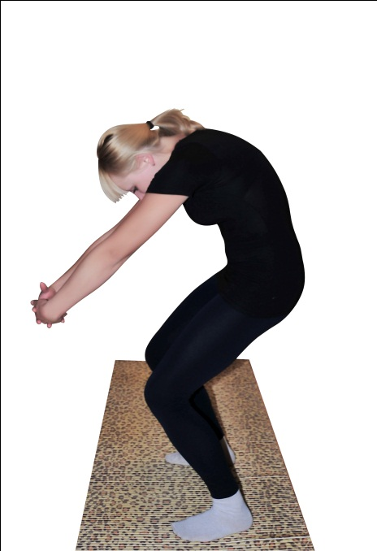
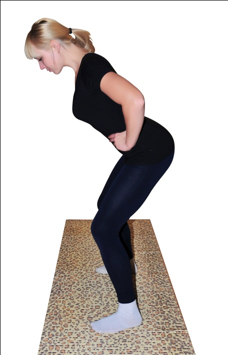

Не пугайтесь! Ничего сложного и сверхъестественного вам делать не придется. Просто, выполняя упражнения, каждый раз в точке наивысшего напряжения легко-легко поморгайте глазами, как будто бабочка машет крыльями. Помните! Быстро моргаем в каждом упражнении! И еще: любое напряжение мы делаем на выдохе, а расслабление — на вдохе, если в пояснении к упражнению не сказано иначе. В данном комплексе упражнений задержка дыхания недопустима.
Мы с вами будем прорабатывать позвоночник последовательно, занимаясь каждым отделом, начиная от шейного и заканчивая крестцовым.
Прежде чем приступить непосредственно к выполнению упражнений, мы предлагаем вам полностью успокоиться, отбросить все мысли о проблемах и нерешенных вопросах, вызвать в душе чувство любви к себе, настроиться на успех и немного подышать «медитативным» дыханием. Для этого сделайте глубокий вдох через нос и длинный выдох через рот. Продолжительность выдоха должна быть в 2 раза больше, чем вдоха. В процессе дыхания как можно более ярко представляйте себе конечный результат, то есть ваше прекрасное зрение и крепкое здоровье. Пусть в ваших мыслях запечатлеется ощущение, что вы превосходно видите абсолютно все, на что нацелен ваш взгляд, вплоть до тончайших контуров.
Дышим: вдох с удовольствием — выдох с еще большим удовольствием, вдох — выдох. Безмятежность, спокойствие, любовь и видение в мыслях конечного результата…
Данный комплекс упражнений поможет вам не только значительно улучшить зрение, но и привести в порядок память, слух, нормализовать внутричерепное давление, повысить работоспособность. При регулярных занятиях значительно улучшится кровоснабжение головного мозга, восстановится вестибулярный аппарат, нормализуется функциональность щитовидной железы, повысится качество сна, устранится онемение рук.
Исходное положение — стоя, ноги расставлены на ширину плеч, носки параллельны друг другу, голова опущена, язык прижат к нёбу.
На выдохе начинаем скользить подбородком вдоль грудины вниз, как будто пытаемся дотянуться им до живота. Продолжая выдыхать, делаем небольшие пружинящие движения — чередуем незначительное напряжение с легким расслаблением. Больно быть не должно — только приятное напряжение. Язык держим прижатым на протяжении всего упражнения. Помните о глазах? В точках напряжения выбираем на полу мелкий объект для разглядывания (элемент рисунка, соринку, или щелку в паркете — на ваше усмотрение) и быстро-быстро слегка (без усердия) моргаем. На вдохе — выпрямляемся и занимаем исходное положение. Если у вас есть проблемы в шейном отделе позвоночника, или вам просто пока еще тяжеловато выполнять данное упражнение, то движение подбородка по грудине вниз можно заменить вытягиванием шеи вперед.
Повторить 5-7 раз.
Исходное положение — стоя, ноги на ширине плеч, руки на поясе, голова слегка откинута назад, язык плотно прижат к нёбу. На выдохе начинаем тянуться вверх подбородком. Язык остается прижатым. Выполняем по аналогии с предыдущим упражнением — слегка напрягаем и еще больше подтягиваем подбородок к потолку — расслабляем. Язык так и держим прижатым. В точке напряжения выбираем объект для разглядывания на потолке и моргаем, глядя на него. Чередуем напряжение — расслабление несколько раз, затем на вдохе принимаем исходное положение.
Повторить 5-7 раз.
Исходное положение — стоя, ноги на ширине плеч, руки опущены вдоль тела. На выдохе, не двигая плечами, наклоняем голову вправо (но не поворачиваем ее!) и стараемся без особого усердия коснуться ухом плеча. Делаем несколько легких пружинящих движений (никакой боли в шее, плечи не задираем!), после чего на вдохе возвращаемся в исходное положение. Повторить 5-7 раз в каждую сторону.
Поначалу это упражнение мало у кого получается хорошо, но со временем вы будете его делать легко и с удовольствием. Не забывайте о внутреннем настрое победителя. Помните о морганиях?
Вот вокруг этой неподвижной оси и начинайте аккуратно на выдохе поворачивать голову. Если упражнение выполняется правильно, то движение подбородка будет в сторону-вперед-вверх. Выполняем по 10 раз в каждую сторону.
Данное упражнение выполняется в трех вариантах: голова прямо (взгляд вперед), голова вниз (взгляд в пол), голова вверх (взгляд в потолок). Очень осторожно! Боли и хруста быть не должно! Моргать не забываете?
Исходное положение — стоя, ноги на ширине плеч, руки на поясе, взгляд — перед собой. Объединяем все предыдущие упражнения для шеи в единое круговое движение. Помогаем себе глазами — амплитуда взгляда должна быть максимальной, и не забываем моргать!
Медленно и свободно перекатываем голову сначала в одну сторону 5-7 раз, затем — в другую.
Голову не запрокидываем — все должно быть плавно, мягко и безболезненно! При наличии проблем с шеей схема выполнения данного упражнения следующая: ухом наклоняемся к плечу, затем тянем подбородок вниз, затем — другим ухом к другому плечу. То есть, делаем только полукруг вперед, без движения назад. Помним о морганиях и о настроении победителя!
Исходное положение — стоя, руки на поясе, ноги на ширине плеч. Голову держим прямо, взгляд устремлен вдаль. Медленно, не прекращая легко-легко моргать, уводим взгляд вправо.
За взглядом идет голова. Поворачиваем ее до упора, и на выдохе делаем небольшие пружинящие усилия, стараясь заглянуть себе за спину и постепенно отодвигая еще дальше за спину дальнюю точку обзора. Продолжаем моргать. Голову запрокидывать нельзя. Если упражнение выполняется правильно, то в точке поворота ваш подбородок должен находиться прямо рядом плечом (но не лежать на нем). На вдохе возвращаемся в исходное положение и снова начинаем делать упражнение в ту же сторону.
Никаких перенапряжений и фанатизма! Все делаем спокойно и размеренно. Повторить 5-7 раз в одну и затем в другую сторону.
Если вы будете регулярно выполнять комплекс упражнений для верхне-грудного отдела, то уже очень скоро почувствуете значительное улучшение состояния сердечнососудистой системы, органов дыхания и пищеварения.
Исходное положение — стоя, ноги на ширине плеч, спина ровная без прогибов и наклонов, руки перед собой внизу сцеплены в замок, плечи выведены вперед, язык прижат к нёбу, а подбородок — к грудине.
На выдохе начинаем тянуться руками вниз, а задней частью шеи — вверх. При этом плечи двигаются навстречу друг другу. Взгляд устремлен в пол, не забываем моргать. Несколько раз с небольшой амплитудой добавляем немного усилия, выгибая верхнюю часть спины в дугу. На вдохе расслабляемся и принимаем исходное положение. Повторить 5-7 раз.
Данное упражнение похоже на предыдущее, только выполняется с точностью до наоборот. Исходное положение — стоя, ноги на ширине плеч, спина ровная без прогибов, плечи разведены назад, прямые руки сцеплены сзади в замок, язык прижат к нёбу.
На вдохе тянем прямые сцепленные руки вниз, стараясь свести лопатки. Обратите внимание, что голову держим ровно, не запрокидывая, а плечи тоже тянем назад и вниз (а не вверх к ушам). Добавляем усилие, стараясь, чтобы грудина выгнулась дугой вверх. Делаем аккуратно и без боли. На выдохе — расслабляемся. В данном упражнении усилие приходится на вдох, а расслабление — на выдох. Повторить 5-7 раз.
Исходное положение — стоя, ноги на ширине плеч, стопы параллельны друг другу, поясница зафиксирована и неподвижна. Согнутые в локтях руки разведены в стороны и параллельны полу, пальцами касаемся плеч.
На выдохе один локоть устремляется к потолку и тянет за собой плечо. Второй вместе с плечом устремляется к полу. Голову наклоняем в сторону идущего вниз плеча. Несколько раз добавляем легкое напряжение и расслабление. Амплитуда небольшая. С каждым напряжением растяжку усиливаем, но без боли. На вдохе возвращаемся в исходное положение. Повторяем 5-7 раз в каждую сторону.
Исходное положение — стоя, чуть согнутые в коленях ноги на ширине плеч, стопы параллельны друг другу, копчик поджат вперед (лобковая кость выдвинута вверх) и зафиксирован.
На выдохе, опуская и слегка выводя вперед плечи, тянемся руками немного вперед и в пол. Должно создаться ощущение напряжения в плечах (как будто положили тяжелый груз) и компрессии в верхне-грудном отделе позвоночника. Добавляем напряжения несколько раз (позвоночник, как бы, сжимается). Взгляд устремлен вдаль, не забываем моргать.
На вдохе принимаем исходное положение, слегка заводя плечи назад (как будто избавляемся от тяжести на плечах) и поднимая их до упора к ушам (позвоночник растягивается). Повторить 3-5 раз. Помните о состоянии любви к себе?
Исходное положение как в упражнении 4.
В этом упражнении мы стараемся объединить все предыдущие упражнения для верхне-грудного отдела позвоночника в процессе вращения плечами. Сначала делаем круговые движения вперед, затем — назад. Все внимание на верхнюю часть позвоночника — активно прорабатываем именно ее. Дыхание произвольное.
Исходное положение — стоя, спина прямая, ноги прямые, стопы плотно прижаты к полу параллельно на ширине плеч, руки согнуты в локтях и разведены в стороны параллельно полу, пальцы касаются плеч. Взгляд устремлен вдаль, язык прижат к нёбу. Внимание: в процессе данного упражнения бедра и ноги остаются неподвижными — прорабатывается только верхне-грудной отдел позвоночника.
Позвоночник в данном случае играет роль оси поворота. На выдохе начинаем поворот вправо: сначала идут глаза, затем голова, плечи, правый локоть, грудь.
Напряжение должно возникнуть в плечах и в верхне-грудном отделе. Как только вы дошли до упора, чуть расслабьтесь и добавьте напряжение, снова расслабьтесь и еще добавьте напряжение, увеличивая угол поворота легкими пружинящими движениями. Амплитуда колебания — минимальная.
С каждым новым усилием стараемся повернуться чуть-чуть дальше, но очень аккуратно и без боли. Не забываем моргать! На вдохе — медленно и аккуратно возвращаемся в исходное положение. Повторить упражнение по 4-5 раз в каждую сторону.
Данный небольшой комплекс упражнений поможет вам нормализовать работу выделительной системы, привести в порядок почки, поджелудочную железу, желудок, печень, кишечник. Помните, что основное напряжение при проработке нижне-грудного отдела позвоночника должно ощущаться в области талии и поясницы. Не забывайте нашу основную цель — зрение.
Исходное положение, как и в упражнении 1 комплекса для верхне-грудного отдела — стоя, ноги на ширине плеч, спина ровная без прогибов и наклонов, руки перед собой внизу сцеплены в замок, плечи выведены вперед, язык прижат к нёбу, а подбородок — к грудине.
Но в данном случае мы прорабатываем не только верхнюю, но и нижнюю часть спины. Поэтому копчик выводим вперед (лобком тянемся вперед и вверх) и фиксируем себя в этом положении. На выдохе наклоняем голову вниз, взгляд устремляем в пол, а руками как будто обхватываем большой мяч. Замок не расцеплять! Ваш позвоночник от самой головы до поясницы должен выгнуться в большую дугу. Дойдя до крайней точки напряжения, слегка расслабляемся и тут же добавляем еще усилие. Делаем так несколько раз. Наклоняться нельзя ни в стороны, ни вперед! В положении выгнутой дуги подвигайте сцепленными руками. Вы должны почувствовать игру мышц на вашей спине. На вдохе — занимаем исходное положение. Повторить 4-5 раз.
Исходное положение — стоя, спина прямая, ноги на ширине плеч, копчик выведен назад (как будто мы тянемся им к макушке) и зафиксирован.
На вдохе тянемся макушкой вверх-назад, но голову запрокидывать нельзя! При этом прямые руки должны быть развернуты ладонями вверх и максимально заведены назад. В замок не сцепляем! Стараемся лопатки соединить друг с другом. Прогибов в пояснице быть не должно. В точке максимального напряжения слегка расслабляемся и добавляем усилие несколько раз. Не забываем моргать и любить себя. На выдохе возвращаемся в исходное положение. Повторить 4-5 раз.
Исходное положение — стоя, ноги на ширине плеч, правая рука согнута в локте и заведена вверх за голову. Локоть смотрит в потолок.
На выдохе направляем взгляд в потолок (моргать не забываем?), локоть подтягиваем еще больше к потолку, а прямую левую руку и плечо устремляем вниз, вдоль туловища. Не наклоняемся, а именно растягиваем правый бок. Чередуем небольшое усилие с незначительным расслаблением. Аккуратно! Амплитуда должна быть очень маленькая. Позвоночник должен принять форму большой дуги, но без наклона в сторону! На вдохе возвращаемся в исходное положение.
Делаем по 5-7 раз в каждую сторону.
Вращение плечами. Исходное положение — стоя, слегка согнутые в коленях ноги разведены на ширину плеч, ступни — параллельны друг другу, голову держим прямо, взгляд направлен вперед-вдаль.
На вдохе поднимаем плечи. Одновременно с наклоном головы вперед выводим вперед и плечи. При этом позвоночник должен образовать дугу выпуклой стороной назад. Обратите особое внимание — никаких наклонов!
Затем на вдохе плечи постепенно уходят вниз и назад, голова слегка отклоняется в ту же сторону, и позвоночник образует дугу выпуклой стороной вперед.
Теперь объедините эти движения в единое целое и делайте их без перерыва, равномерно распределяя нагрузку вдоль всего позвоночника. Делаем по 7-10 вращений в каждую сторону.
Исходное положение — стоя, спина прямая, ноги слегка согнуты в коленях и разведены на ширину плеч, копчик выведен вперед (лобок тянется вперед и вверх). Голову держим прямо, взгляд устремлен вперед (моргать не забываем).
Сжатые в кулаки ладони упираем сзади в поясницу — в области почек. На вдохе стараемся как можно ближе свести локти, выполняя несколько пружинящих движений и понемногу добавляя напряжение. При этом позвоночник должен выгнуться вперед, как большая дуга.
Возвращаемся в исходное положение и делаем то же самое, но в другую сторону. При этом кулаки упираются в область почек, но уже не со стороны спины, а спереди.
Выгибаясь дугой, тянемся подбородком к коленям. Наклонов в пояснице быть не должно! Повторить по 5-7 раз в каждую сторону. Помните о взгляде и настрое победителя?
Исходное положение — стоя, прямые ноги разведены шире плеч, стопы параллельны друг другу и плотно прижаты к полу. Руки согнуты в локтях и разведены в стороны параллельно полу. Пальцы лежат на плечах. Область бедер и таза жестко зафиксирована и неподвижна. Взгляд направлен вдаль перед собой.
На выдохе уводим вправо сначала взгляд, затем голову, плечи, грудь и живот. То есть, делаем скручивание позвоночника вправо от самого верха до поясницы. Как только достигли упора, делаем несколько пружинящих движений, добавляя усилие и увеличивая угол поворота. Внимание! Ноги, бедра и таз должны быть жестко зафиксированы и неподвижны! На вдохе возвращаемся в исходное положение. Запомните, что в данном упражнении позвоночник исполняет роль оси поворота. Аналогично выполняем упражнение по направлению влево. Повторить по 5-7 раз в каждую сторону.
Регулярно выполняя данный комплекс, вы сможете без лекарств и сложных процедур нормализовать работу мочеполовой системы, органов малого таза, восстановить или повысить либидо, снять боль, а впоследствии и полностью решить проблему радикулита, ишиаса и других заболеваний нижней части тела.
Внимание! Данные упражнения нужно делать с особой осторожностью и минимальной амплитудой, если у вас имеются грыжи в пояснично-крестцовом отделе позвоночника. Следите за нагрузкой! Она должна равномерно распределяться по всему позвоночнику.
Исходное положение — стоя, полусогнутые в коленях ноги разведены на ширину плеч, таз «подкручен» вперед. На выдохе тянемся копчиком вперед и вверх, как бы стараясь лобком дотянуться до лба. Взгляд направлен в пол. Не забываем моргать. В точке упора слегка расслабляемся, а затем добавляем напряжение. Повторяем напряжение-расслабление 7-10 раз, после чего на вдохе возвращаемся в исходное положение. Наклонов быть не должно. Позвоночник должен выгибаться в дугу по всей длине. Повторить 5-7 раз.
Исходное положение — стоя, слегка согнутые ноги разведены на ширину плеч, стопы слегка повернуты вовнутрь, копчик выведен назад. Голову держим ровно, взгляд перед собой. На выдохе тянем копчик к затылку. В точке упора делаем легкое расслабление и добавляем усилие. Повторяем это пружинящее движение несколько раз. Ощущение компрессии должно возникнуть в пояснично-крестцовой области. Если возникла тяжесть, ее можно снять при помощи предыдущего упражнения. Упражнение повторяем 4-5 раз.
Данное упражнение похоже на предыдущее. Исходное положение — стоя, ноги слегка согнуты в коленях, спина прямая, туловище наклонено вперед под углом примерно 45⁰. Взгляд — перед собой.
На выдохе тянемся копчиком к затылку и прогибаемся в пояснице. В точке наивысшего напряжения слегка расслабляемся, после чего добавляем усилие. Повторяем несколько напряжений-расслаблений и на вдохе возвращаемся в исходное положение. Повторяем упражнение 5-7 раз. Можно слегка изменить точку напряжения, перемещая в точке упора центр тяжести с одной ноги на другую. Если в крестцовой зоне возникает напряжение — снимаем его при помощи упражнения 1.
Исходное положение — стоя, ноги полусогнуты, туловище слегка отклонено назад.
Голову держим ровно — не запрокидываем и не наклоняем вперед. На вдохе копчик начинаем тянуть к затылку. При этом ягодицы уходят назад, а живот — вперед. Равномерно распределяем напряжение по всему позвоночнику — не допускайте, чтобы в некоторых местах были чересчур сильные зажимы.
В точке наивысшего напряжения начинаем переносить вес с одной ноги на другую, все сильнее с сильнее сгибая колени. На вдохе принимаем исходное положение и убираем напряжение в пояснице. Повторить 3-5 раз.
Исходное положение — стоя, прямые ноги на ширине плеч, стопы параллельны друг другу, руки на поясе.
Начинаем делать круговые движения тазом сначала в одну сторону 10-12 раз, а затем столько же в другую.
Дыхание — свободное. Взгляд — перед собой. В процессе выполнения упражнения верхняя часть тела должна быть абсолютно неподвижна.
Исходное положение — стоим ровно, правое бедро перемещаем вперед и вправо и переносим на него вес тела.
На выдохе пружиним бедром, как бы заставляя его еще больше выдвинуться вправо. После этого фиксируем себя в исходном положении и начинаем делать растяжку левого бока. Левую руку вытягиваем вертикально вверх и наклоняемся вправо.
Затем, не разгибаясь и продолжая держать наклон вправо, перемещаем вес тела на левую ногу (не забывая при этом выдвинуть левое бедро) и продолжаем слегка усиливать наклон вправо. Таким образом, у нас еще больше растягивается левый бок.
Повторяем то же самое в другую сторону и растягиваем правый бок.
Исходное положение — стоя, ноги на ширине плеч, носки слегка повернуты вовнутрь, правая рука поднята вертикально вверх, а левая — прижата вдоль туловища.
На выдохе пальцами правой руки тянемся к потолку, а левой ладонью стараемся дотянуться до пола. Корпус прогибаем только слегка. Делаем пружинящие движения, все больше и больше растягивая позвоночник.
Повторить в другую сторону. Сделать по 5-7 раз в каждую сторону.
Встряхиваем головой, плечами, грудью, ягодицами, бедрами и всеми конечностями в произвольном порядке — так, чтобы получился массаж капилляров по всему телу.
Отдохните и подышите глубоко и спокойно.
Внимание! В этом комплекса важно помнить, что позвоночник исполняет роль оси для всех скруток. Голову всегда держим прямо, не запрокидывая и не наклоняя ее вперед. Движения должны быть очень плавные, спокойные и аккуратные. Не допускайте болевых ощущений. Дыхание — свободное и ровное.
Исходное положение — стоя, ноги слегка согнуты в коленях и разведены шире плеч, стопы параллельны друг другу и плотно прижаты к полу, руки согнуты в локтях, разведены в стороны параллельно полу, пальцы рук лежат на плечах.
Плавно и спокойно начинаем поворачиваться вправо. Сначала идет взгляд, за ним — голова, плечи, и все тело, кроме стоп — они остаются неподвижными и прижатыми к полу. Затем на выдохе начинаем легкими пружинящими движениями добавлять усилие. С каждым усилием стараемся повернуться еще дальше, но боли не допускаем! На вдохе возвращаемся в исходное положение. Повторить по 3-5 аз в каждую сторону. И не забываем моргать!
Исходное положение аналогично предыдущему упражнению, только прямое без прогибов туловище наклонено вперед под углом 45⁰. Совершаем поворот и пружинящие движения для увеличения угла поворота из этого положения. Не разгибаемся! Позвоночник неподвижен — крутимся вокруг него, как вокруг оси. Голову держим прямо. При правильном выполнении грудь должна развернуться к потолку, а локоть смотреть вверх.
Если трудно сохранить неподвижность оси поворота (вашего позвоночника) на первых порах можно упереться головой в стену, зафиксироваться таким образом и закручиваться, представляя, что вы ввинчиваетесь головой в стену (не переусердствуйте, чтобы не пришлось делать внеплановый ремонт квартиры). На выдохе чередуйте напряжение и расслабление, постепенно увеличивая угол поворота. На вдохе вернитесь в исходное положение. Если тяжело сохранять наклон — выпрямитесь и отдохните. Сделайте аналогичную скрутку в другую сторону. Повторите 3 раза в каждую сторону. Не допускайте боли и не забывайте моргать!
Данное упражнение похоже на предыдущее. Исходное положение то же, только прямое без прогибов туловище отклоняется немного назад (не переусердствуйте, чтоб не потерять равновесие). Голова — на одном уровне с позвоночником, а подбородок направлен не вверх, а в сторону груди.

Выполняем упражнение аналогично предыдущему, только при повороте ведущий локоть совершает движение вниз, а взгляд направляется через плечо и спину на противоположную пятку. То есть, закручиваясь вправо, смотрим сзади через плечо на левую пятку и наоборот. Если на первых порах вам сложно сохранить ось поворота, вы так же, как и в предыдущем упражнении, можете зафиксироваться головой у стены. На выдохе делаем несколько пружинящих движений, добавляя усилие и увеличивая угол разворота. На вдохе — возвращаемся в исходное положение. Если вам тяжело держать отклоненное назад туловище, вы можете осторожно выпрямиться и расслабиться. Повторите упражнение по 3 раза в каждую сторону.
Исходное положение — то же, что и в предыдущих упражнениях, только прямой корпус наклоняем строго вправо (никаких наклонов вперед или назад). Голова — на одном уровне с позвоночником. В данном случае правый локоть — ведущий.
Скрутка начинается движением правого локтя назад и вверх. При этом взгляд уходит вправо, а за ним движутся голова, плечи, грудь, талия, бедра, поворачиваясь вокруг оси-позвоночника. Голову держим ровно, не опуская и не задирая. Обязательно следите, чтобы при скрутке сохранялся первоначальный наклон туловища вправо. В высшей точке на выдохе делаем пружинящие движения, увеличивая угол поворота. На вдохе принимаем исходное положение и осторожно выпрямляемся. Выполните то же самое, только в другую сторону. Повторите упражнение по 3 раза вправо и влево. Помните о моргании и настроении победителя!
Данное упражнение очень тяжело описать словами, но когда вы сделаете его хотя бы 1 раз, — все «непонятки» сразу пройдут. Исходное положение — то же, что и в предыдущих упражнениях.
Прямой корпус наклонен вправо, голова — на одном уровне с позвоночником, подбородок смотрит в сторону груди, руки на плечах. Скрутку начинаем движением левого локтя назад. При этом взгляд уводим влево, за ним идет голова и все остальные части тела, разворачиваясь вверх. В высшей точке напряжения на выдохе сделайте несколько пружинящих движений, добавляя усилие и увеличивая угол поворота. На вдохе — аккуратно вернитесь в исходное положение и выпрямитесь. Отдохните пару секунд и выполняйте упражнение в другую сторону. Сделайте по 3 раза в каждую сторону.
Если у вас есть гимнастическая палка, вы можете выполнять скрутки с палкой на плечах.
Расслабьтесь и подышите спокойным медитативным дыханием (медленный вдох и в два раза более медленный выдох). Представьте, что на вдохе все хорошее, чего вам хочется достичь, благодаря данной методике, у вас уже есть. Прочувствуйте, что вы подвижны, гибки и прекрасно видите. На выдохе позвольте всем негативным мыслям, сомнениям и унынию уйти из вашего сознания. Как настроение? Вы себя любите и гордитесь собой? Отлично!